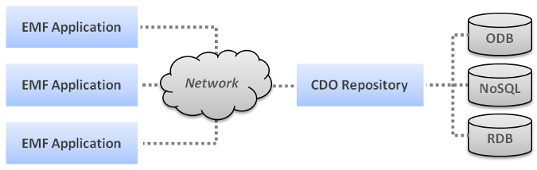

Overview |
 |
Author: Eike Stepper
CDO is a pure Java model repository for your EMF models and meta models. CDO can also serve as a
persistence and distribution framework for your EMF based application systems. For the sake of this overview a
model can be regarded as a graph of application or business objects and a meta model as a set of classifiers that
describe the structure of and the possible relations between these objects.
CDO supports plentyfold deployments such as embedded repositories, offline clones or replicated clusters. The
following diagram illustrates the most common scenario:

1 Functionality
The main functionality of CDO can be summarized as follows:
- Persistence
- Persistence of your models in all kinds of database backends like major relational databases or NoSQL
databases. CDO keeps your application code free of vendor specific data access code and eases transitions between
the supported backend types.
- Multi User Access
- Multi user access to your models is supported through the notion of repository sessions. The physical transport
of sessions is pluggable and repositories can be configured to require secure authentication of users. Various
authorization policies can be established programmatically.
- Transactional Access
- Transactional access to your models with ACID properties is provided by optimistic and/or pessimistic locking
on a per object granule. Transactions support multiple savepoints that changes can be rolled back to. Pessimistic
locks can be acquired separately for read access, write access and the option to reserve write access in the
future. All kinds of locks can optionally be turned into long lasting locks that survive repository restarts.
Transactional modification of models in multiple repositories is provided through the notion of XA transactions
with a two phase commit protocol.
- Transparent Temporality
- Transparent temporality is available through audit views, a special kind of read only transactions that provide
you with a consistent model object graph exactly in the state it has been at a point in the past. Depending on the
chosen backend type the storage of the audit data can lead to considerable increase of database sizes in time.
Therefore it can be configured per repository.
- Parallel Evolution
- Parallel evolution of the object graph stored in a repository through the concept of branches similar to source
code management systems like Subversion or Git. Comparisons or merges between any two branch points are supported
through sophisticated APIs, as well as the reconstruction of committed change sets or old states of single objects.
- Scalability
- Scalability, the ability to store and access models of arbitrary size, is transparently achieved by loading
single objects on demand and caching them softly in your application. That implies that objects that are no
longer referenced by the application are automatically garbage collected when memory runs low. Lazy loading is
accompanied by various prefetching strategies, including the monitoring of the object graph's usage and the
calculation of fetch rules that are optimal for the current usage patterns. The scalability of EMF applications can
be further increased by leveraging CDO constructs such as remote cross referencing or optimized content adapters.
- Thread Safety
- Thread safety ensures that multiple threads of your application can access and modify the object graph without
worrying about the synchronization details. This is possible and cheap because multiple transactions can be opened
from within a single session and they all share the same object data until one of them modifies the graph. Possible
commit conflicts can be handled in the same way as if they were conflicts between different sessions.
- Collaboration
- Collaboration on models with CDO is a snap because an application can opt in to be notified about remote
changes to the object graph. By default your local object graph transparently changes when it has changed remotely.
With configurable change subscription policies you can fine tune the characteristics of your distributed shared
model so that all users enjoy the impression to collaborate on a single instance of an object graph. The level
of collaboration can be further increased by plugging custom collaboration handlers into the asynchronous CDO
protocol.
- Data Integrity
- Data integrity can be ensured by enabling optional commit checks in the repository server such as referential
integrity checks and containment cycle checks, as well as custom checks implemented by write access handlers.
- Security
- The data in a repository can be secured through pluggable
authenticators and
permission managers. A default security model is provided on top of these low-level
components. The model comprises the concepts of users, groups, roles and extensible permissions.
- Fault Tolerance
- Fault tolerance on multiple levels, namely the setup of fail-over clusters of replicating repositories under
the control of a fail-over monitor, as well as the usage of a number of special session types such as fail-over or
reconnecting sessions that allow applications to hold on their copy of the object graph even though the physical
repository connection has broken down or changed to a different fail-over participant.
- Offline Work
- Offline work with your models is supported by two different mechanisms:
- One way is to create a clone of a complete remote repository, including all history of all branches.
Such a clone is continuously synchronized with its remote master and can either act as an embedded repository to
make a single application tolerant against network outage or it can be set up to serve multiple clients, e.g., to
compensate low latency master connections and speed up read access to the object graph.
- An entirely different and somewhat lighter approach to offline work is to check out a single version of the
object graph from a particular branch point of the repository into a local CDO workspace. Such a workspace
behaves similar to a local repository without branching or history capture, in particular it supports multiple
concurrent transactions on the local checkout. In addition it supports most remote functionality that is known from
source code management systems such as update, merge, compare, revert and check in.
2 Architecture
The architecture of CDO comprises applications and repositories. Despite a number of embedding options applications
are usually deployed to client nodes and repositories to server nodes. They communicate through an application
level CDO protocol which can be driven through various kinds of physical transports, including fast intra JVM
connections.
CDO has been designed to take full advantage of the OSGi platform, if available at runtime, but can perfectly be
operated in standalone deployments or in various kinds of containers such as JEE web or application servers.
The following chapters give an overview about the architecures of applications and repositories, respectively.
2.1 Client Architecture
The architecture of a CDO application is characterized by its mandatory dependency on EMF, the Eclipse Modeling
Framework. Most of the time an application interacts with the object graph of the model through standard EMF APIs
because CDO model graph objects are EObjects. While CDO's basic functionality integrates nicely and
transparently with EMF's extension mechansims some of the more advanced functions may require to add direct
dependendcies on CDO to your application code.
The following diagram illustrates the major building blocks of a CDO application:

See Also:
2.2 Repository Architecture
The main building block of a CDO repository is split into two layers, the generic repository layer that client
applications interact with and the database integration layer that providers can hook into to integrate their data
storage solutions with CDO. A number of such integrations already ship with CDO, making it possible to connect a
repository to all sorts of JDBC databases, Hibernate, Objectivity/DB, MongoDB or DB4O.
While technically a CDO repository depends on EMF this dependency is not of equal importance as it is in a CDO
application. In particular the generated application models are not required to be deployed to the server because a
CDO repository accesses models reflectively and the model objects are not implemented as EObjects on
the server.
The following diagram illustrates the major building blocks of a CDO repository:

See Also:
Copyright (c) 2011, 2012 Eike Stepper (Berlin, Germany) and others.